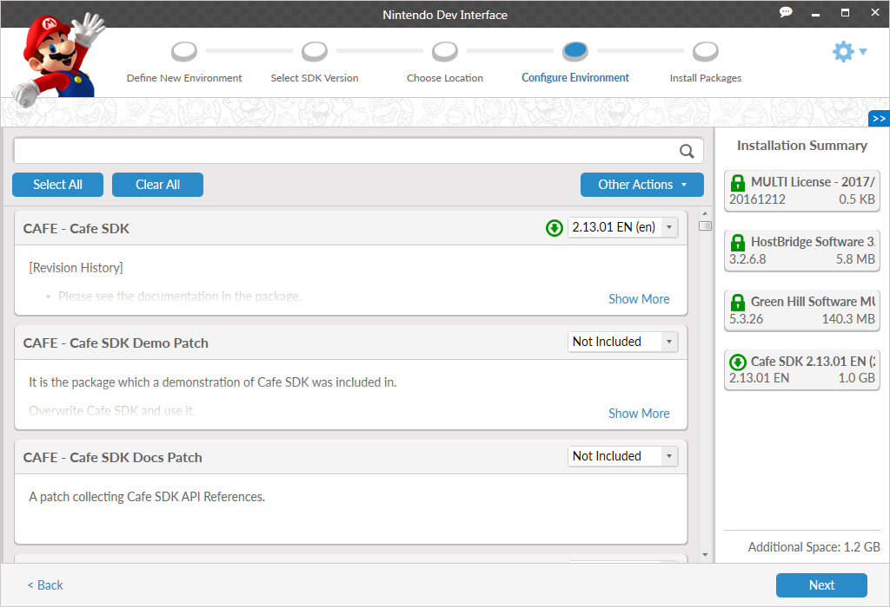
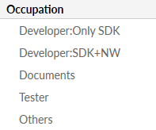
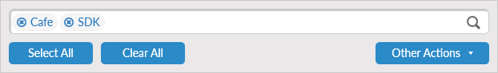
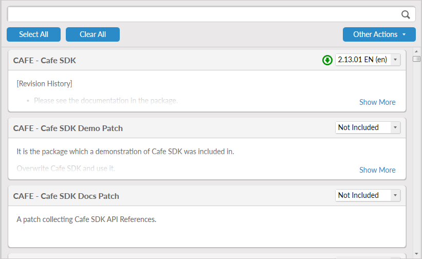
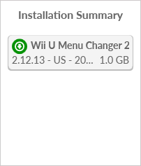

Instead of installing software packages based on bundle selections or fully updating an environment, you may also select a custom set of packages. Typically, a package selection screen resembles the following image.

The screen is separated into three sections:
- Tag List: Located on the left side of the screen, this list contains defined tags that can filter the package list. If there are no tags associated with any packages, this section is not displayed.
- Package List: Located in the center of the screen, this list contains packages that can be installed.
- Installation Summary: This list displays all packages that are currently selected to be modified.
The Tag List and Installation Summary can be opened and closed by clicking the arrow buttons in the upper left and right corners of the window.
Tag List

If any packages in the main package list have tags associated with them, the tag list is displayed. Selecting options from the list filters the package list so that it displays only packages that have the indicated tag. Selecting more than one tag shows only the packages that have all the selected tags. To remove a selected tag, click the selection again. To show or hide all tags in a particular category (such as Occupation), click the header.
Package List
The package list displays all packages that can be installed or modified, based on the selection of foundation and foundation version for the environment. In addition, it contains several features to assist in finding the packages that you want to install.

The top of the package list allows you to filter and select packages in a number of ways.
- Search Bar: Entering text into the search bar displays packages where the title, description, or tags contain the specified text. To filter, enter the desired text and press ENTER. You may enter text multiple times, in which case the list will display only packages that contain all search terms. You may remove the last search term by using the DELETE key or remove any search term by clicking the blue "x" icon next to it.
- Select All: Set each package currently in the package list to install the latest available version.
- Clear All: Deselect all packages that are currently in the package list.
-
Other Actions
- Select All Platform Add-Ons: Sets all add-ons for packages in the current package list to install.
- Update All (Only when Managing Details): Sets all packages in the current package list, that are not at their latest version, to install the latest version of the package.

A number of packages are displayed at the bottom of the package list, based on your filtering selections. An individual package has the following properties.
- Name: The indicated name for the package.
-
Action Selection: A drop-down list box that contains actions that may be performed on the package. Click the button to cycle through all available actions. An icon displayed next to the action indicates what action is being taken. For more information about specific icons, see the Action Icons table below.
- Not Included: The package will not be installed.
- Version Selection: The specified version of the package will be installed, replacing any previously installed version.
- Reinstall (When Managing Environments): The currently installed version of the package will be reinstallled.
- Uninstall (When Managing Environments): The currently installed version of the package will be removed from the environment.
- Add-On List (If applicable): Add-ons selected from this list are installed for this package. Selected add-ons are added to the Installation Summary.
- Description: A general description of the package contents. If the description is large, Show More is displayed. Selecting Show More opens a window with the full text of the description.
- Tags: Tags that the package belongs to (if any) are displayed in the lower left. Selecting a tag functions in the same way as selecting a tag in the Tag list.
Installation Summary

The Installation Summary displays all packages to be installed when continuing with the installation process. This allows you to confirm your package selection choices, including the size of packages that will be installed. Additional icons indicate what actions are being performed on individual packages. For more information about these icons, see the table below.
Action Icons
| Icon | Name | Description |
|---|---|---|
| No Icon | Not Selected | No action will be take for this package. |

|
Install | The indicated package will be installed with the indicated version. |

|
Required | The indicated package must be installed because it is a dependency of another selected package. |
| Reinstall | The current version of the indicated package will be reinstalled. | |
| Rollback |
Only for Zarf packages. The indicated package will apply an "undo" to the most recent installation, and be rolled back to its previous state. For more information, see Rollback in the Glossary. |
|
| Uninstall | The indicated package will be uninstalled from the system. |
CONFIDENTIAL